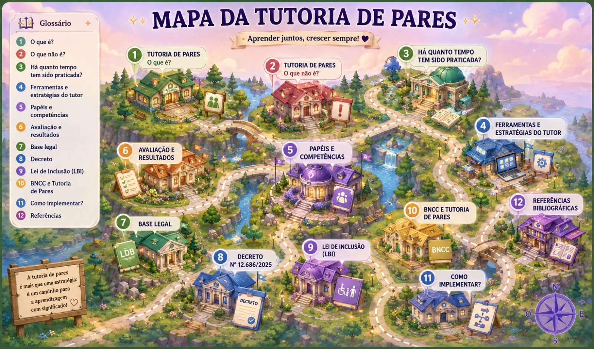

Explore conceitos, estratégias, benefícios e legislações que tornam a aprendizagem colaborativa mais inclusiva.
Uma experiência interativa e encantadora para explorar cada etapa da Tutoria de Pares.
